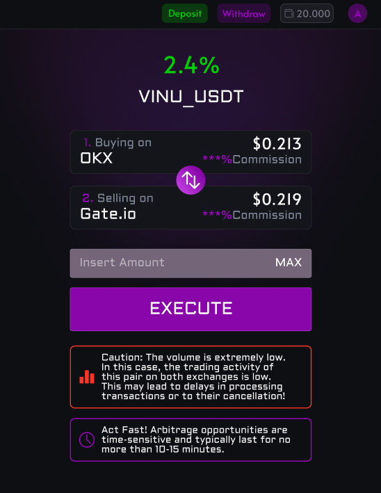

AlphArbitrage offers our users the opportunity to observe real-time live pairings that can yield up to 6% per transaction. This process is highly automated, and all you need to do is top up your balance on our website with an amount starting from $25, as this is the minimum transaction amount. This price is determined by various factors such as the transaction percentage, potential price fluctuation risks, and our service fee, which consists of 5% of your net profit.
After topping up, the user selects the current deal and clicks the "execute" button. Following this action, our work begins, where we buy the coin for you on one exchange and automatically sell it on another. After a short period, you receive your amount back, plus the profit from the transaction.
 Immersion into the AlphArbitrage Universe- Entering the Virtual Universe: As soon as a client tops up their balance, their funds enter a virtual vault where they await their turn to embark on an arbitrage adventure. These funds transform into digital explorers, ready for action.
- The Algorithmic Eye: At the heart of our system is the "Algorithmic Eye"—a powerful artificial intelligence that continuously scans multiple exchanges, searching and analyzing thousands of arbitrage opportunities in real-time. It acts as an all-seeing eye that never sleeps.
- Deal Selection: When a client selects a deal, the Algorithmic Eye swiftly performs calculations, assessing all risks and potential profits. It then gives the command to execute, sending the digital explorers on their mission.
- Pooling Funds for Maximum Impact: In a single transaction, client funds are added to a so-called "pool." This collective pool leverages the power of combined capital, allowing the Algorithmic Eye to take advantage of price drops in purchases or price increases in sales. This pooling technology is unique and ensures that each transaction benefits from the best possible market conditions.
- Instant Transfer: The pooled funds are instantly transferred to the first exchange, where cryptocurrency is purchased at the most favorable price. This action is akin to an explorer finding a rare artifact in a hidden corner of the virtual world.
- Dynamic Buying and Selling: Thanks to our advanced AI, the system continuously monitors price movements. If the purchase price drops further or the selling price increases, the system automatically executes additional buys or sells at the perfect moment. This ensures that clients always receive the maximum possible profit from each arbitrage opportunity.
- Journey to Another Exchange: After the cryptocurrency is bought, the digital explorers immediately move to another exchange where the price for this asset is higher. Here, they sell the artifact, earning a profit for the client.
- Return with Profits: Within moments, the digital explorers return to the virtual vault, bringing back not only the client's original funds but also the earned profit. This process is so fast that the client sees the results almost instantly on their account.